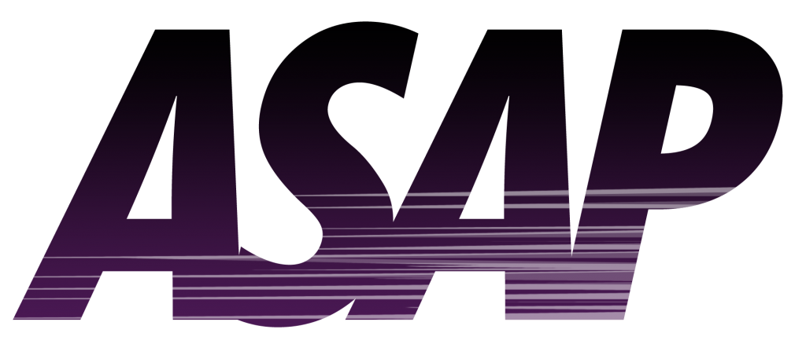

Новини

Із змінами, внесеними
Законами України
від 8 грудня 2004 року N 2222-IV,
від 1 лютого 2011 року N 2952-VI,
від 19 вересня 2013 року N 586-VII,
від 21 лютого 2014 року N 742-VII,
від 2 червня 2016 року N 1401-VIII
Закон України
від 8 грудня 2004 року N 2222-IV
визнано таким, що не відповідає Конституції України (є неконституційним),
згідно з Рішенням Конституційного Суду України
від 30 вересня 2010 року N 20-рп/2010 у зв'язку з порушенням
конституційної процедури його розгляду та прийняття.